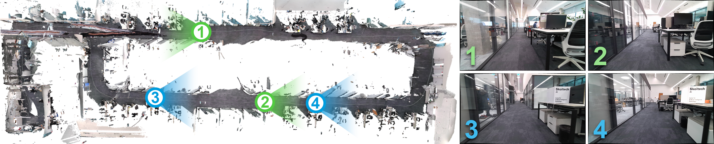

Dominating Set Database Selection for Visual Place Recognition
Anastasiia Kornilova1*,
Ivan Moskalenko1,2*,
Timofei Pushkin1,2,
Fakhriddin Tojiboev1,
Rahim Tariverdizadeh1,
Gonzalo Ferrer1
1 Skolkovo Institute of Science and Technology (Skoltech), Center for AI Technology (CAIT)
2 Software Engineering Department, Saint Petersburg State University
* Indicates equal contribution
Abstract
This paper presents an approach for creating a
visual place recognition (VPR) database for localization in
indoor environments from RGBD scanning sequences. The
proposed approach is formulated as a minimization problem
in terms of dominating set algorithm for graph, constructed
from spatial information, and referred as DominatingSet. Our
algorithm shows better scene coverage in comparison to other
methodologies that are used for database creation. Also, we
demonstrate that using DominatingSet, a database size could
be up to 250-1400 times smaller than the original scanning
sequence while maintaining a recall rate of more than 80% on
testing sequences. We evaluated our algorithm on 7-scenes and
BundleFusion datasets and an additionally recorded sequence
in a highly repetitive office setting. In addition, the database
selection can produce weakly-supervised labels for fine-tuning
neural place recognition algorithms to particular settings,
improving even more their accuracy.
Sk campus dataset

We have recorded a set of sequences in the Skoltech
campus using Azure Kinect DK sensor. This environment
contains repeated structures with similar design of desks,
walls and doors and therefore provides more challenging
conditions for a VPR algorithm in the indoor environment. You can download this dataset here.
Citing this work
If you find this work useful in your research, please consider citing:
@article{vprdb2023,
title={Dominating Set Database Selection for Visual Place Recognition},
author={Anastasiia Kornilova, Ivan Moskalenko, Timofei Pushkin, Fakhriddin Tojiboev, Rahim Tariverdizadeh, and Gonzalo Ferrer},
journal={arXiv preprint arXiv:2208.00277},
year={2023}}